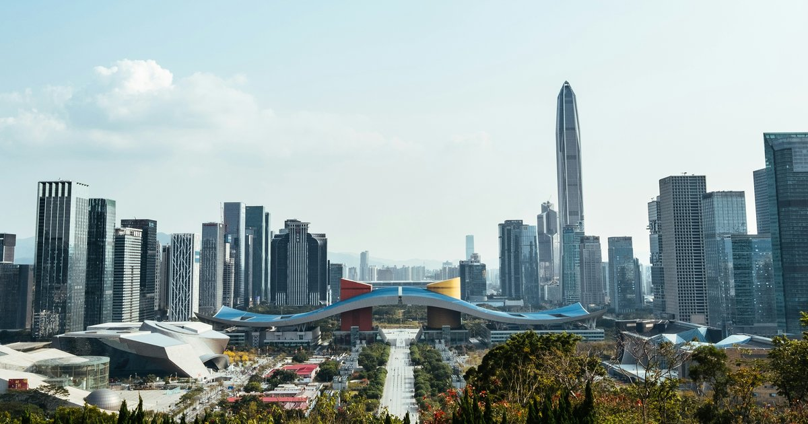

Imagen: Robert Bye, Unsplash
En la provincia de Guangdong, ubicada en la costa sureste de China, se encuentra Shenzhen, también llamada el Silicon Valley chino, una ciudad que, en 40 años, logró pasar de ser una "pequeña ciudad pesquera" a un paraíso de la tecnología, el desarrollo y la innovación.
Dentro de todo aquello que puede decirse y admirarse de esta ciudad, en la conversación debe aparecer la apuesta de planeación urbana que ofrece. Según el Banco Mundial y el GEF (2023), la ciudad está habitada por alrededor de 17 millones de personas que, desde 2004, se mueven y habitan el espacio mediante 16 líneas de metro que operan en más de 380 estaciones, bajo un modelo de desarrollo denominado "rieles + propiedad".
Este modelo tiene como característica central establecer una condición de uso múltiple del suelo para que puedan convivir instalaciones públicas, vivienda y conexiones integrales de transporte. ¿Cómo? Gracias a un modelo de construcción vertical en el cual se aprovecha el terreno desde el nivel del subsuelo, donde se encuentra la estación de metro; posteriormente, un nivel destinado al uso comercial y/o a espacios donde puedan prestarse servicios públicos; y, a nivel de calle y hacia el cielo, varios pisos de vivienda accesible.
¿Qué puede enseñar este modelo de planeación urbana a las grandes ciudades de México? Si bien el modelo de desarrollo urbano de Shenzhen tiene áreas de oportunidad, como la falta de mecanismos que prevean la creciente densidad de población en sólo algunas zonas de la ciudad y la falta de conexión en las nuevas periferias, habría que plantearse la posibilidad de imaginar un diseño urbano que priorice el desarrollo del transporte público en las grandes urbes de México, especialmente al considerar el histórico descuido de los servicios del Metro en la CDMX o al enfrentar escenarios cotidianos en los cuales el mexicano promedio pierde alrededor de 152 horas al año en el tráfico (UNAM, 2024).
Hay que recordar, además, que gran parte de la construcción de sociedades pacíficas depende del desarrollo que éstas tienen en su día a día, siendo las condiciones de movilidad y vivienda, así como la accesibilidad a los servicios públicos y a los espacios de ocio, sumamente importantes para alcanzar un estado de paz positiva, es decir, una condición en la cual se sostienen estructuras que apoyan el bienestar, la integración y la equidad.
Si bien las ciudades son espacios en donde pueden crearse tensiones, jerarquías y conflictos, apostar por una planeación que nos obligue a convivir, habitar y movernos en espacios compartidos puede ser un acercamiento a la posibilidad de una mayor estabilidad y bienestar.
CIPMEX · Centro de Investigación para la Paz México, A.C. · Paz que se piensa, paz que se construye